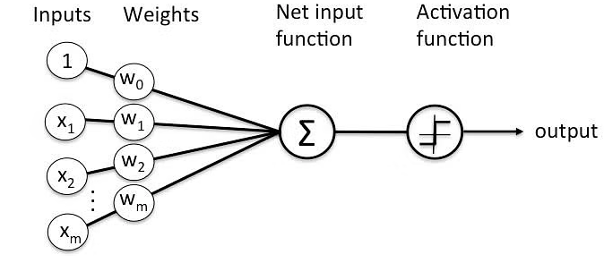
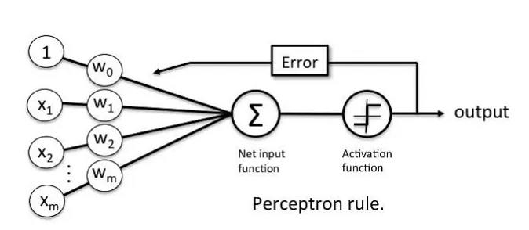

Perceptrons in Artificial Intelligence & Machine Learning
"The best way to predict the future is to create it." — Peter Drucker
Binary Classifiers
In machine learning, a binary classifier is a type of algorithm or model that is designed to classify data into two distinct classes or categories. It is specifically used for binary classification tasks, where the goal is to assign each input instance to one of the two classes.
The two classes are often referred to as the positive class and the negative class, or class 1 and class 0, depending on the context. The classifier takes input features and outputs a prediction indicating which class the input belongs to.
It could be based on various algorithms and techniques, including but not limited to:
- Logistic Regression: It models the probability of an instance belonging to a certain class using a logistic function, which is then thresholded to make the final binary prediction.
- Support Vector Machines (SVM): SVM constructs a hyperplane or set of hyperplanes in a high-dimensional space to separate the two classes with maximum margin.
- Decision Trees: Decision trees recursively split the input space based on different feature values until reaching leaf nodes that represent the class labels.
- Random Forests: Random forests combine multiple decision trees, where each tree contributes to the final prediction, and the class with the majority vote is selected.
- Gradient Boosting algorithms: Gradient Boosting methods like XGBoost or AdaBoost create an ensemble of weak learners (often decision trees) that are sequentially trained to correct the mistakes made by the previous learners.
- Neural Networks: Neural networks, including perceptrons and more complex architectures like multi-layer perceptrons (MLPs), can be used as binary classifiers by setting up the appropriate output layer with a suitable activation function.
Its performance is commonly evaluated using metrics such as accuracy, precision, recall, F1 score, and area under the receiver operating characteristic curve (ROC AUC). These metrics help measure the classifier's ability to correctly classify instances from both classes and balance between minimizing false positives and false negatives.
Applications in various domains, such as spam detection, fraud detection, disease diagnosis, sentiment analysis, and many other areas where the problem involves making a decision between two mutually exclusive options.
"A Perceptron is an algorithm for supervised learning of binary classifiers. This algorithm enables neurons to learn and processes elements in the training set one at a time."

Basic Components of Perceptron
-
Input Values
A perceptron receives one or more input values, which can represent features or attributes of the input data. Each input is typically represented as a real number.
-
Weights
Each input value is associated with a weight. The weights determine the significance or importance of the respective input in influencing the perceptron's output. The weights can be positive or negative real numbers.
-
Weighted Sum
The perceptron computes the weighted sum of the input values by multiplying each input value by its corresponding weight and summing them up. This calculation represents the linear combination of inputs and weights.
-
Activation Function
The weighted sum is then passed through an activation function, which introduces non-linearity into the perceptron's output. The activation function determines whether the perceptron should activate (fire) or remain inactive (not fire) based on the input it receives.
-
Threshold/Bias
In addition to the weighted sum, a perceptron may incorporate a bias term or threshold. The bias acts as an offset that helps control the decision boundary of the perceptron. It can be thought of as the level of activation required for the perceptron to fire.
-
Output
The output is the result of applying the activation function to the weighted sum (plus bias, if present). It typically represents the classification decision or prediction made by the perceptron, such as assigning an input to a particular class or generating a binary output.
During the training process, the weights and bias of the perceptron are adjusted iteratively based on the training data and a learning algorithm. The goal is to find the optimal values for the weights and bias that allow the perceptron to accurately classify the training examples or minimize the error between predicted and desired outputs.
By combining multiple perceptrons or using more complex architectures like multi-layer perceptrons (MLPs), it becomes possible to solve more complex problems that require non-linear decision boundaries.
Types of Perceptron Models
-
Single-Layer Perceptron
The single-layer perceptron is the basic and most fundamental form of the perceptron model. It consists of a single layer of perceptrons (neurons) that directly connect the inputs to the outputs. It is suitable for linearly separable binary classification problems.
-
Multi-Layer Perceptron (MLP)
The multi-layer perceptron is an extension of the single-layer perceptron that introduces one or more hidden layers between the input and output layers. Each hidden layer contains multiple neurons, and the neurons are densely connected between consecutive layers. The MLP can handle non-linearly separable problems and is capable of learning complex mappings.
-
Feedforward Neural Network
A feedforward neural network is another term used to refer to multi-layer perceptrons (MLPs). It signifies the flow of information in one direction, from the input layer through the hidden layers to the output layer, without loops or feedback connections.
-
Radial Basis Function Network (RBFN)
RBFN is a type of perceptron model that uses radial basis functions as activation functions in the hidden layer(s). The RBFN computes the weighted sum of the distances between the input and a set of learned prototype vectors (centers) and applies a radial basis function to determine the hidden layer activations.
-
Probabilistic Neural Network (PNN)
PNN is a perceptron model that incorporates probability theory into its architecture. It uses a non-linear activation function called the Gaussian kernel to calculate the probability of an input belonging to a specific class. PNN is often used for classification tasks and can handle both binary and multi-class problems.
-
Self-Organizing Maps (SOM)
SOM, also known as Kohonen networks, is a type of unsupervised learning model based on the perceptron architecture. SOM is used for clustering and visualization purposes. It organizes input data into a low-dimensional grid of neurons, where each neuron represents a cluster prototype.
-
Adaptive Resonance Theory (ART)
ART is a family of neural network models that use the perceptron architecture to implement self-organizing and adaptive learning. ART networks are capable of learning and recognizing patterns in a stable and adaptive manner.
Perceptron Learning Rule
The perceptron learning rule, also known as the delta rule, is an iterative algorithm used to train a single-layer perceptron for binary classification tasks. It adjusts the weights of the perceptron based on the errors between the predicted outputs and the desired outputs.

Following are the rules in basic flow:
-
Initialize the weights of the perceptron to small random values or zeros.
-
For each training example (input instance) in the training dataset, perform the following steps:
-
Calculate the weighted sum of the inputs by multiplying each input value by its corresponding weight and summing them up:
weighted_sum = weight1 * input1 + weight2 * input2 + ... + weightN * inputN -
Apply the activation function to the weighted sum to obtain the predicted output:
predicted_output = activation_function(weighted_sum) -
Compute the error by subtracting the predicted output from the desired output:
error = desired_output - predicted_output -
Update the weights using the perceptron learning rule:
weight_new = weight_old + learning_rate * error * inputThe learning rate is a hyperparameter that controls the magnitude of weight updates. It determines the step size during the learning process. The weight update is performed for each weight, where the weight is updated by adding the learning rate multiplied by the error and the corresponding input value.
-
-
Repeat Step 2 for all training examples in the dataset.
-
Iterate over the entire dataset multiple times (epochs) or until a stopping criterion is met, such as reaching a maximum number of iterations or achieving a desired level of accuracy.
This adjusts the weights of the perceptron in a direction that minimizes the error between the predicted outputs and the desired outputs. It aims to find the optimal weights that allow the perceptron to correctly classify the training examples.
It's important to note that the rule works effectively for linearly separable datasets, but it may not converge or produce accurate results for datasets that are not linearly separable. For non-linearly separable datasets, more complex models like multi-layer perceptrons (MLPs) or other advanced algorithms are typically used.